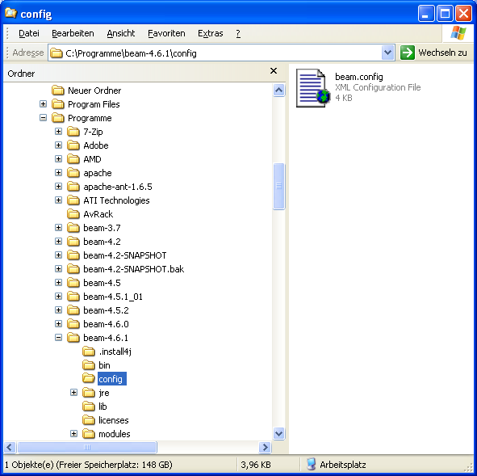
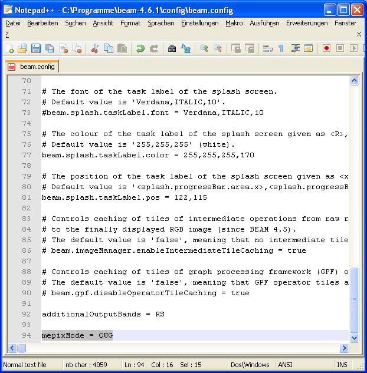

The MEPIX software offers a special mode for QWG users which
provides various additional processing options. To access these options,
a special configuration needs to be performed
(Figure 2.2,
Figure 2.3)):
go to the 'config' folder of the BEAM installation
edit the file 'beam.config' with a text editor
add the entry 'mepixMode = QWG' in a new line at the end of the file
restart BEAM-VISAT

Figure 2.2. Configuration file in BEAM config folder (shown for Windows XP)

Figure 2.3. Configuration for QWG mode in BEAM config file